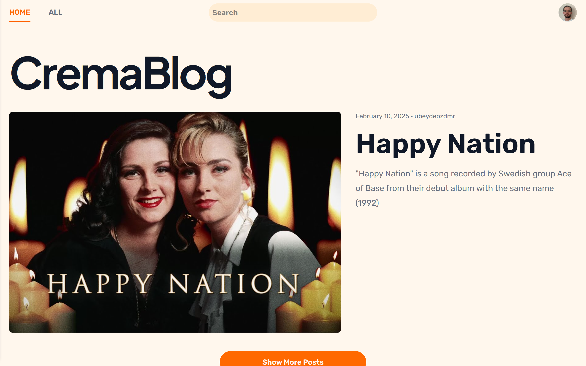

A markdown-based blog website project that is created using the MERN stack.

CremaBlog is a markdown-based blog website project that is created using the MERN stack. It is a full-stack project that allows editors (or admin) to create, read, update, and delete blog posts. It also has authentication and authorization features for managing user access. Additionally, it provides a responsive design.
In CremaBlog, users can create an account, log in, and log out. They can also update their profile information. The website has a search feature for blog posts. It also has a dark mode feature for users who prefer dark themes. The website is responsive and works on various devices, ensuring a seamless experience across desktop and mobile.
CremaBlog is built using the MERN stack, which stands for MongoDB, Express.js, React, and Node.js. MongoDB is used as the database to store blog posts and user information. Express.js is used as the backend framework to handle HTTP requests and responses. React is used to create the user interface and manage the frontend logic. And Node.js is used as the runtime environment for the backend server. Additionally, Docker is used for containerization. It ensures that the application runs consistently in different environments. Caddy is used as a web server that provides easy configuration for serving static and dynamic content.
The deployment process involves building the application and then using Docker to create a container for it. Once the container is ready, it can be deployed to a cloud provider or local server using Caddy for serving it to users.
I wanted to do my markdown blog project, which I left incomplete years ago, with a nicer design and better functionality this time, and I started working on the site from the end of January 2025. I wanted to improve my relatively weak backend development skills, and naturally I started doing it here first. Then, after doing the design in isolation (html, css, tailwindcss and simple javascript), I started adapting it to the frontend with React. I have completed the first version of the project in 2-3 weeks by working on it in my free time. My goal is to continue enhancing the application by adding more features and improving user experience in future iterations.
Yes, I have plans to enhance CremaBlog by adding more features and improving the user experience. Some of the features I plan to add include user profiles, enhanced search capabilities, add tag functionality for posts, add comments functionality, and integrations with social media.